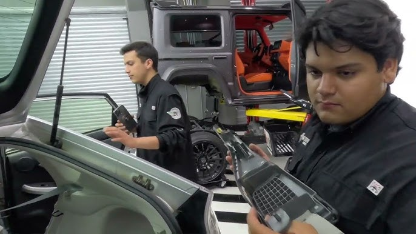
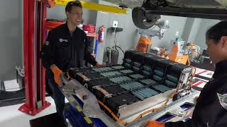

Nuestros Servicios
En Skillsland nos especializamos en la conversión de vehículos híbridos y eléctricos, ofreciendo servicios avanzados para transformar tu auto en una opción más ecológica y eficiente.
Además, proporcionamos capacitación especializada y evaluamos a nuevos talentos en el sector automotriz para garantizar la calidad en todo el proceso.
Conversión de Vehículos Híbridos
Transformamos autos de gasolina en híbridos, optimizando el consumo de combustible y reduciendo las emisiones de CO2. Nuestro proceso incluye la instalación de sistemas híbridos avanzados, garantizando un desempeño óptimo en todos los tipos de vehículos.
Conversión de Vehículos Eléctricos
Realizamos la conversión completa de vehículos a eléctricos, utilizando las mejores tecnologías y componentes para asegurar la eficiencia energética y el rendimiento. Convierta su vehículo en una opción 100% eléctrica y disfrute de los beneficios ambientales y económicos.
Capacitación Automotriz Especializada
Ofrecemos programas de capacitación y evaluación para personas interesadas en especializarse en el sector automotriz. Desde la instalación de sistemas híbridos y eléctricos hasta el diagnóstico avanzado, formamos a profesionales para que se conviertan en expertos en el área.
.jpg)